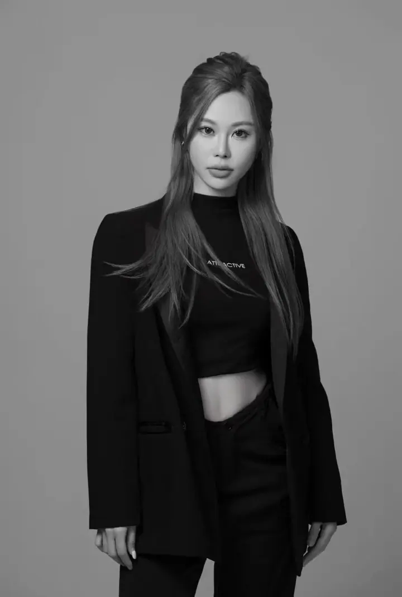
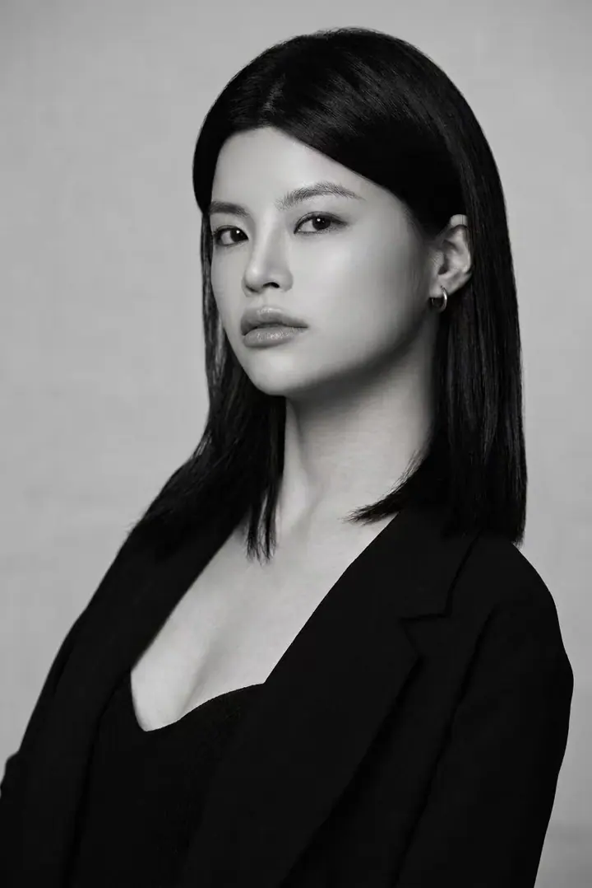
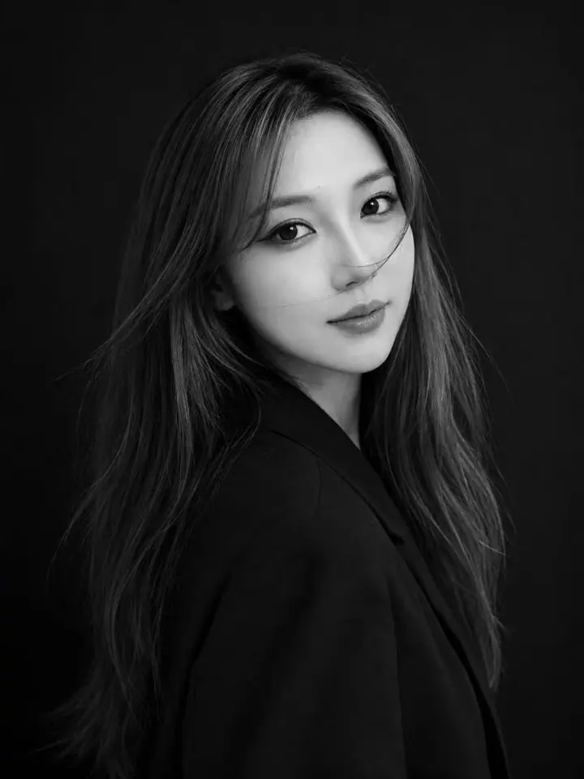
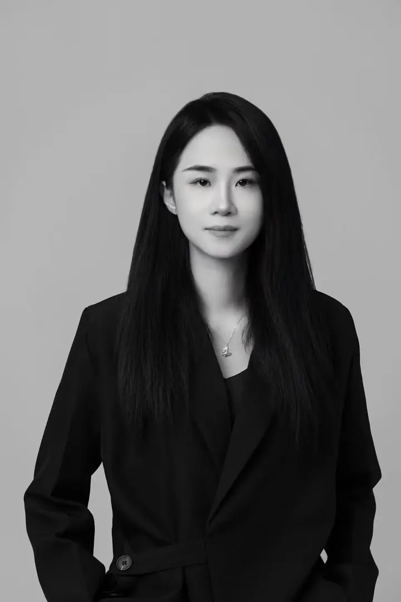
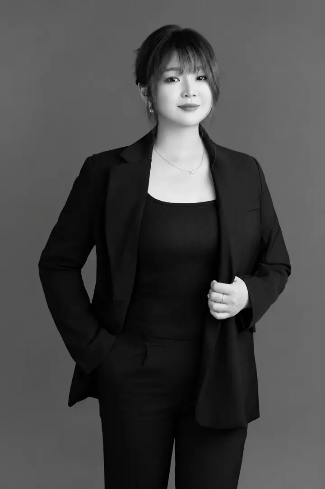
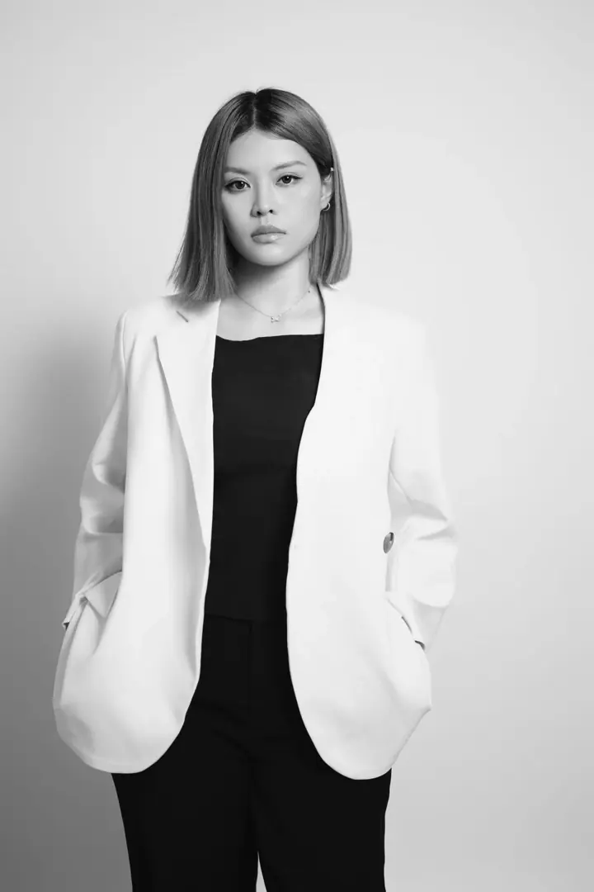

The SCULP Edit
Find your
point of view.
Look beyond a finished photograph. Explore the choices behind the look, then find the artist whose eye feels right for you.
Three ways to see it.
Real work. A closer reading.

Find your artist.
Eight individual points of view. Explore the complete portfolios, with each artist's work in its original proportions.
Miranda
Signature Artist / Founder
Editorial bridal

Yuki
Director Artist
Classic refinement

Mira
Director Artist
New Chinese Style

Angelina
Senior Artist
Korean-inspired freshness

Elaine
Senior Artist
Soft, modern beauty

Emily
Senior Artist
Fresh & polished

Michelle
Senior Artist
Refined & balanced

Giselle
Senior Artist
Defined soft glam
Not sure where your style sits yet?